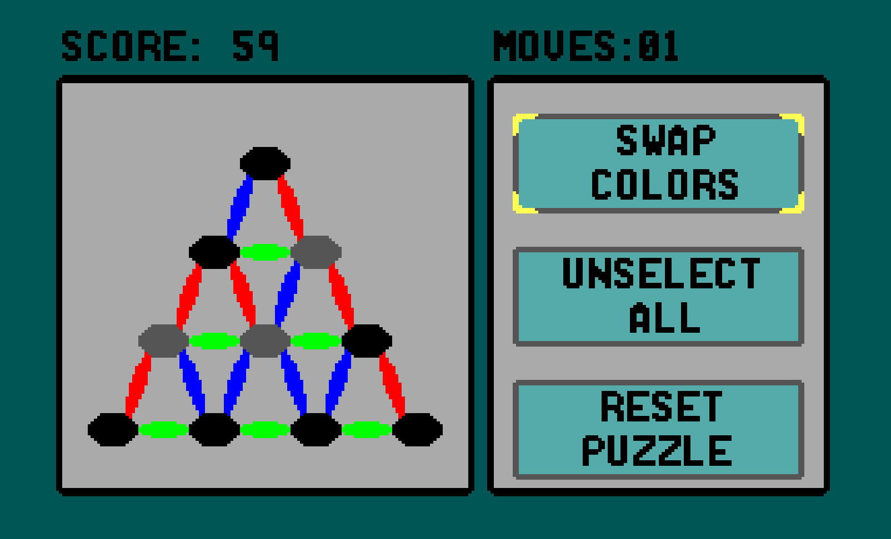
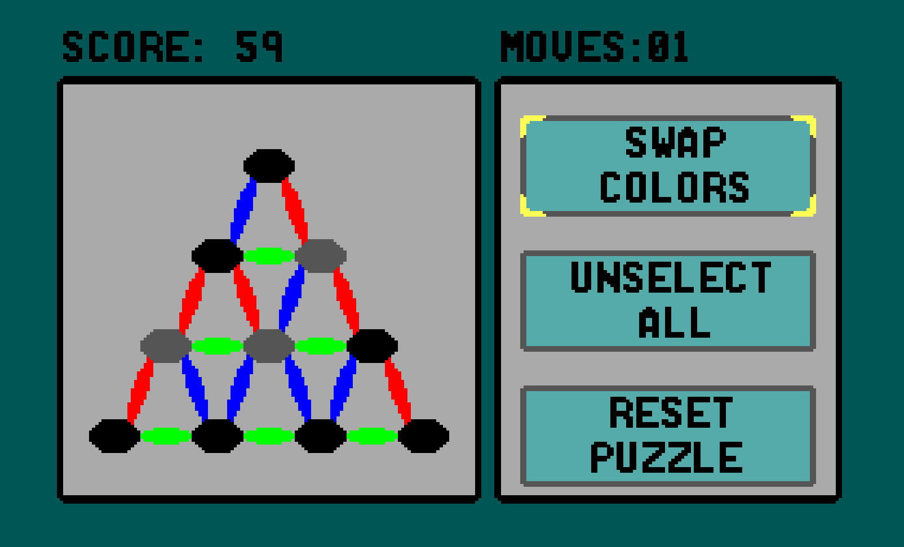

I made this game right after finishing my Master's degree at WPI. I made the entire thing over
the span of about 2 weeks, and learned a lot about Z80 programming from doing so. It's based
off of a project that was assigned during the previous semester that I created using Java, so
this is really a port of a Java game I made for school. If you want to download it, check out
the
github
page for full access to the ROM, source code, and even the entire source code for
my Java assignment.
-Cameron "Bofner" Mitchell